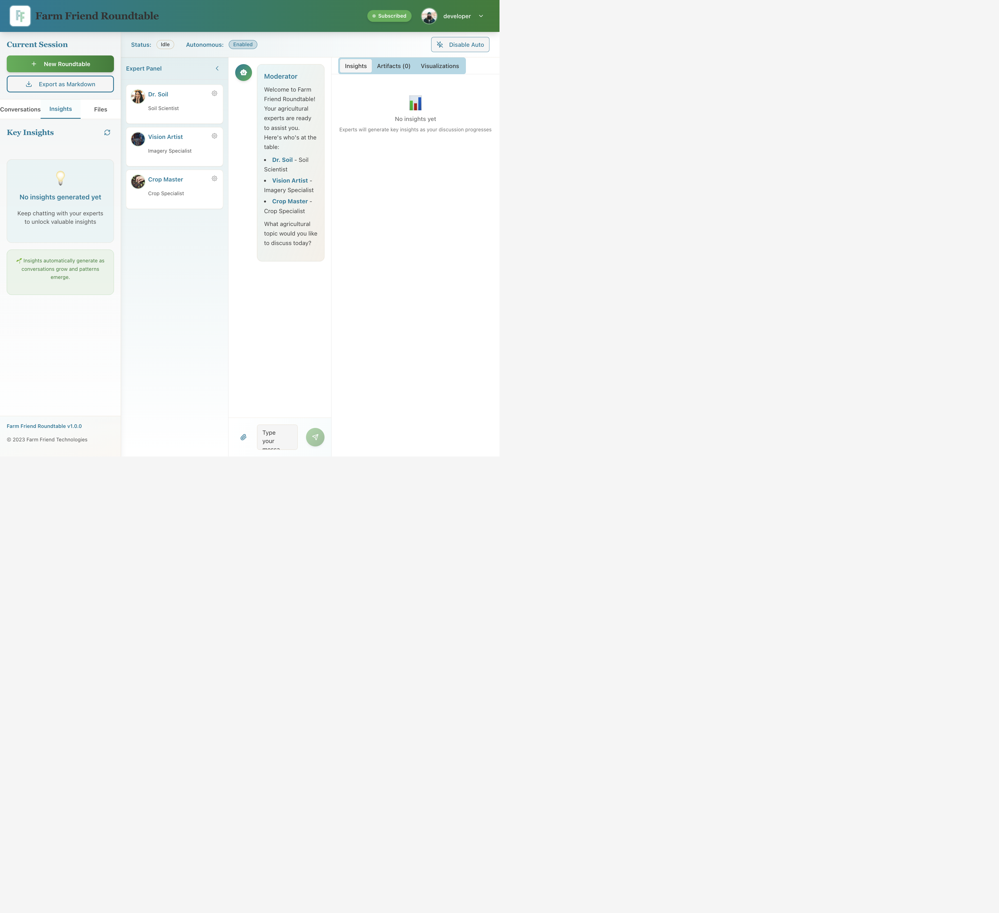

Is it a nutrient deficiency? A disease? A pest you can't see yet? Getting expert advice used to take days.

Assemble your team of AI agricultural experts in seconds. Each one focused on your specific problem.
Powered by cutting-edge models. Focused on your farm.
Four experts. One clear answer. Zero guesswork. Twenty-four seven.